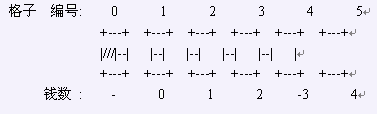

Notice:注册本OJ方式请见https://www.lydsy.com/JudgeOnline/wttl/thread.php?tid=5671
Problem 1915. -- [Usaco2010 Open]奶牛的跳格子游戏1915: [Usaco2010 Open]奶牛的跳格子游戏
Time Limit: 4 Sec Memory Limit: 64 MB
Submit: 309 Solved: 128
[Submit][Status][Discuss]Description
奶牛们正在回味童年，玩一个类似跳格子的游戏，在这个游戏里，奶牛们在草地上画了一行N个格子，(3 <=N <= 250,000)，编号为1..N。就像任何一个好游戏一样，这样的跳格子游戏也有奖励！第i个格子标有一个数字V_i(-2,000,000,000 <=V_i <= 2,000,000,000)表示这个格子的钱。奶牛们想看看最后谁能得到最多的钱。规则很简单：
* 每个奶牛从0号格子出发。(0号格子在1号之前，那里没钱)
* 她向N号格子进行一系列的跳跃(也可以不跳)，每次她跳到的格子最多可以和前一
个落脚的格子差K格(1 <= K <= N)(比方说，当前在1号格，K=2, 可以跳到2号和3号格子)
*在任何时候，她都可以选择回头往0号格子跳，直到跳到0号格子。另外，除了以上规则之外，回头跳的时候还有两条规则：
*不可以跳到之前停留的格子。
*除了0号格子之外，她在回来的时候，停留的格子必须是恰巧过去的时候停留的某个格子的前一格(当然，也可以跳过某些过去时候停留的格子)。简单点说，如果i号格子是回来
停留的格子，i+1号就必须是过去停留的格子，如果i+1号格子是过去停留的格子，i号格子不一定要是回来停留的格子。(如果这里不太清楚的可以去看英文原文)她得到的钱就是所有停留过的格子中的数字的和，请你求出最多奶牛可以得到的钱数。
在样例中，K=2，一行5个格子。

一个合法的序列Bessie可以选择的是0[0], 1[0], 3[2], 2[1], 0[0]。(括号里的数表示钱数)
这样，可以得到的钱数为0+0+2+1+0 = 3。
如果Bessie选择一个序列开头为0, 1, 2, 3, ...，那么她就没办法跳回去了，因为她没办法再跳到一个之前没跳过的格子。序列0[0], 2[1], 4[-3], 5[4], 3[2], 1[0], 0[0]是最大化钱数的序列之一，最后的钱数为(0+1-3+4+2+0 = 4)。
Input
* 第1行 1: 两个用空格隔开的整数: N 和 K
* 第2到N+1行: 第i+1行有一个整数: V_i
Output
* 第一行: 一个单个的整数表示最大的钱数是多少。
Sample Input
5 2
0
1
2
-3
4
Sample Output
4
OUTPUT DETAILS:
还有一种可能的最大化钱数的序列是: 0 2 4 5 3 1 0
HINT
Source
[Submit][Status][Discuss]
HOME
Back